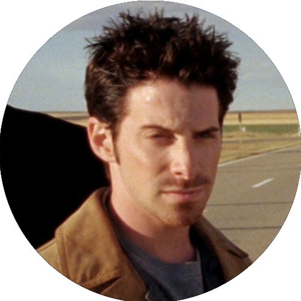
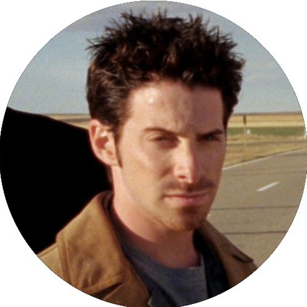

Filhos da Máfia (2001)

Direção: Brian Koppelman e David Levien
Distribuição: New Line Cinema
Lançamento:
 11 de outubro de 2001
11 de outubro de 2001
 26 de abril de 2002
26 de abril de 2002  ASSISTIR
ASSISTIR
Personagens
 

Direção: Brian Koppelman e David Levien
Distribuição: New Line Cinema
Lançamento:
11 de outubro de 2001
26 de abril de 2002 ASSISTIR
